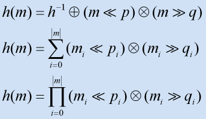

Hash table
Table of Contents
Hash table
In computing, a hash table (also hash map) is a data structure used to implement an associative array, a structure that can map keys to values. A hash table uses a hash function to compute an index into an array of buckets, from which the correct value can be found.1
Cuckoo hashing2
- Theory
The basic idea is to use two hash functions instead of only one. This provides two possible locations in the hash table for each key. In one of the commonly used variants of the algorithm, the hash table is split into two smaller tables of equal size, and each hash function provides an index into one of these two tables.
When a new key is inserted, a greedy algorithm is used: The new key is inserted in one of its two possible locations, "kicking out", that is, displacing, any key that might already reside in this location. This displaced key is then inserted in its alternative location, again kicking out any key that might reside there, until a vacant position is found, or the procedure enters an infinite loop. In the latter case, the hash table is rebuilt in-place using new hash functions
- Cuckoo hash map written in C++
http://sourceforge.net/projects/cuckoo-cpp/
template <class Key, class Value, class Hash, class Equal> class cuckoo { typedef pair<Key, Value> Data; }
- Static cuckoo hashtable generator for C/C++
- Example
#If the input file looks like this: 100 300 120 100043 2031 102
The output file might look like this:
static map_t map_a[3]= { 300, 100, 102, }; static map_t map_b[3]= { 2031, 120, 100043, }; static int hash_a (int x) { return (((1544301215 * x) - (x ^ 616423921)) % 3); } static int hash_b (int x) { return (((1521445927 * x) - (x ^ 1711634687)) % 3); } static map_t const *lookup (int x) { map_t const *result; int index; index= hash_a (x); assert (index >= 0 && index < 3); result= &map_a[index]; if (MAP_KEY_MATCH(result,x)) return result; index= hash_b (x); assert (index >= 0 && index < 3); result= &map_b[index]; if (MAP_KEY_MATCH(result,x)) return result; return NULL; } #include <assert.h> typedef int map_t; #define MAP_KEY_MATCH(X,Y) *(X) == (Y) #include "inthash.inc"
- Debian/Ubuntu
deb http://debian.theiling.de/ etch contrib main non-free deb-src http://debian.theiling.de/ etch contrib main non-free apt-get update apt-get install mkhashtable
- Example
Choosing a good hash function
Some authors claim that good hash functions should have the avalanche effect; that is, a single-bit change in the input key should affect, on average, half the bits in the output. Some popular hash functions do not have this property.
- avalanche affect
The avalanche effect is evident if, when an input is changed slightly (for example, flipping a single bit) the output changes significantly (e.g., half the output bits flip).
If a block cipher or cryptographic hash function does not exhibit the avalanche effect to a significant degree, then it has poor randomization, and thus a cryptanalyst can make predictions about the input, being given only the output. This may be sufficient to partially or completely break the algorithm. Thus, the avalanche effect is a desirable condition from the point of view of the designer of the cryptographic algorithm or device.
Constructing a cipher or hash to exhibit a substantial avalanche effect is one of the primary design objectives. This is why most block ciphers are product ciphers. It is also why hash functions have large data blocks. Both of these features allow small changes to propagate rapidly through iterations of the algorithm, such that every bit of the output should depend on every bit of the input before the algorithm terminates
Collision resolution
- Separate chaining
- Open addressing
- Coalesced hashing
- Robin Hood hashing
- Cuckoo hashing
- Hopscotch hashing
Features
- Advantages
The main advantage of hash tables over other table data structures is speed. This advantage is more apparent when the number of entries is large. Hash tables are particularly efficient when the maximum number of entries can be predicted in advance, so that the bucket array can be allocated once with the optimum size and never resized.
If the set of key-value pairs is fixed and known ahead of time (so insertions and deletions are not allowed), one may reduce the average lookup cost by a careful choice of the hash function, bucket table size, and internal data structures. In particular, one may be able to devise a hash function that is collision-free, or even perfect (see below). In this case the keys need not be stored in the table.
- Drawbacks
Although operations on a hash table take constant time on average, the cost of a good hash function can be significantly higher than the inner loop of the lookup algorithm for a sequential list or search tree. Thus hash tables are not effective when the number of entries is very small. (However, in some cases the high cost of computing the hash function can be mitigated by saving the hash value together with the key.)
For certain string processing applications, such as spell-checking, hash tables may be less efficient than tries, finite automata, or Judy arrays. Also, if each key is represented by a small enough number of bits, then, instead of a hash table, one may use the key directly as the index into an array of values. Note that there are no collisions in this case.
The entries stored in a hash table can be enumerated efficiently (at constant cost per entry), but only in some pseudo-random order. Therefore, there is no efficient way to locate an entry whose key is nearest to a given key. Listing all n entries in some specific order generally requires a separate sorting step, whose cost is proportional to log(n) per entry. In comparison, ordered search trees have lookup and insertion cost proportional to log(n), but allow finding the nearest key at about the same cost, and ordered enumeration of all entries at constant cost per entry.
If the keys are not stored (because the hash function is collision-free), there may be no easy way to enumerate the keys that are present in the table at any given moment.
Although the average cost per operation is constant and fairly small, the cost of a single operation may be quite high. In particular, if the hash table uses dynamic resizing, an insertion or deletion operation may occasionally take time proportional to the number of entries. This may be a serious drawback in real-time or interactive applications.
Hash tables in general exhibit poor locality of reference—that is, the data to be accessed is distributed seemingly at random in memory. Because hash tables cause access patterns that jump around, this can trigger microprocessor cache misses that cause long delays. Compact data structures such as arrays searched with linear search may be faster, if the table is relatively small and keys are integers or other short strings. According to Moore's Law, cache sizes are growing exponentially and so what is considered "small" may be increasing. The optimal performance point varies from system to system.
Hash tables become quite inefficient when there are many collisions. While extremely uneven hash distributions are extremely unlikely to arise by chance, a malicious adversary with knowledge of the hash function may be able to supply information to a hash that creates worst-case behavior by causing excessive collisions, resulting in very poor performance, e.g. a denial of service attack. In critical applications, universal hashing can be used; a data structure with better worst-case guarantees may be preferable.
Independent packages
- SparseHash
http://code.google.com/p/sparsehash/
SparseHash (formerly Google SparseHash) An extremely memory-efficient hashmap implementation, with only 2 bits/entry of overhead. The SparseHash library has several C++ hash map implementations with different performance characteristics, including one that optimizes for memory use and another that optimizes for speed.
- Modifying Google Sparsehash for the Intel Compiler http://kyleteague.com/blog/modifying-google-sparsehash-intel-compiler.html
- The Google Dense Hashtable Library
http://attractivechaos.wordpress.com/2008/09/12/the-google-hash-table-library/
- Google dense hash table (google-dense) implements an open addressing hash table with quardric probing. It requires users to set an empty element and a deleted element which are distinct from all the other valid keys in the hash table. Google-dense tests whether a bucket is empty or deleted by performing key comparisons. It is fast for integer keys where comparisons are cheap but will have overhead for string keys.
- google-map keeps key-value pair in one array. Keeping one array helps cache efficiency because we will not incur a cache miss when we have located the bucket via a key. However, putting a key and a value in one struct/class will waste memory when the key type and the value type are not aligned. For example, on 64-bit systems, if the key type is “const char*” and the value type is “int”, 25% of memory is wasted on memory alignment.
- SunriseDD [thread-safe,complex]
http://www.sunrisetel.net/software/devtools/sunrise-data-dictionary.shtml
SunriseDD An open source C library for hash table storage of arbitrary data objects with lock-free lookups, built-in reference counting and guaranteed order iteration. The library can participate in external reference counting systems or use its own built-in reference counting. It comes with a variety of hash functions and allows the use of runtime supplied hash functions via callback mechanism. Source code is well documented.
- uthash
http://uthash.sourceforge.net/
uthash This is an easy-to-use hash table for C structures.
- CMPH - C Minimal Perfect Hashing Library
- strmap
- Libcfu
- hash table
hash_map/setin SGI STL#include <hash_map> namespace std { using namespace __gnu_cxx; } using namespace std; struct str_hash { size_t operator () (const string &str) const { return __stl_hash_string(str.c_str()); } }; std::hash_map<string, string, str_hash> hash_str; string str1("str1"); string str2("str2"); hash_str[str1] = "hash_str1"; hash_str[str2] = "hash_str2"; cout << hash_str[str1] <<endl; cout << hash_str[str2] <<endl;
- glibc hash table
http://linux.die.net/man/3/hsearch
typedef struct entry { char *key; void *data; } ENTRY; #include <stdio.h> #include <stdlib.h> #include <search.h> char *data[] = { "alpha", "bravo", "charlie", "delta", "echo", "foxtrot", "golf", "hotel", "india", "juliet", "kilo", "lima", "mike", "november", "oscar", "papa", "quebec", "romeo", "sierra", "tango", "uniform", "victor", "whisky", "x-ray", "yankee", "zulu" }; int main(void) { ENTRY e, *ep; int i; hcreate(30); for (i = 0; i < 24; i++) { e.key = data[i]; /* data is just an integer, instead of a pointer to something */ e.data = (void *) i; ep = hsearch(e, ENTER); /* there should be no failures */ if (ep == NULL) { fprintf(stderr, "entry failed\n"); exit(EXIT_FAILURE); } } for (i = 22; i < 26; i++) { /* print two entries from the table, and show that two are not in the table */ e.key = data[i]; ep = hsearch(e, FIND); printf("%9.9s -> %9.9s:%d\n", e.key, ep ? ep->key : "NULL", ep ? (int)(ep->data) : 0); } hdestroy(); exit(EXIT_SUCCESS); }
- hashit
http://freecode.com/projects/hashit
struct shash_t; typedef struct shash_t *hash_t; hash_t hashit_create(uint32_t, size_t, uint32_t(*)(), int(*)(void *, void *), unsigned int); int hashit_insert(hash_t, void *, void *); int hashit_delete(hash_t, void *); int hashit_replace(hash_t, void *, void *); void *hashit_lookup(hash_t, void *); int hashit_destroy(hash_t); /* Accesors */ void **hashit_getkeys(hash_t); void **hashit_getvalues(hash_t); size_t hashit_tablesize(hash_t); size_t hashit_size(hash_t);
- Christopher Clark's hashtable
Defined functions
create_hashtable hashtable_insert hashtable_search hashtable_remove hashtable_count hashtable_destroy
Example of use
struct hashtable *h; struct some_key *k; struct some_value *v; static unsigned int hash_from_key_fn( void *k ); static int keys_equal_fn ( void *key1, void *key2 ); h = create_hashtable(16, hash_from_key_fn, keys_equal_fn); insert_key = (struct some_key *) malloc(sizeof(struct some_key)); retrieve_key = (struct some_key *) malloc(sizeof(struct some_key)); v = (struct some_value *) malloc(sizeof(struct some_value)); (You should initialise insert_key, retrieve_key and v here) if (! hashtable_insert(h,insert_key,v) ) { exit(-1); } if (NULL == (found = hashtable_search(h,retrieve_key) )) { printf("not found!"); } if (NULL == (found = hashtable_remove(h,retrieve_key) )) { printf("Not found\n"); } hashtable_destroy(h,1); /* second arg indicates "free(value)" */
- glib hash table
https://developer.gnome.org/glib/2.31/glib-Hash-Tables.html
Build with glib:
sudo apt-get install libglib2.0-devgcc test.c -Wall -o test `pkg-config --cflags --libs glib-2.0`
example: http://www.ibm.com/developerworks/linux/tutorials/l-glib/section5.html
#include <stdio.h> #include <glib.h> void value_destroyed(gpointer data) { printf("Got a value destroy call for %d\n", GPOINTER_TO_INT(data)); } gboolean finder(gpointer key, gpointer value, gpointer user_data) { return (GPOINTER_TO_INT(key) + GPOINTER_TO_INT(value)) == 42; } int main(int argc, char** argv) { GHashTable* hash = g_hash_table_new_full(g_direct_hash, g_direct_equal, NULL, (GDestroyNotify)value_destroyed); g_hash_table_insert(hash, GINT_TO_POINTER(6), GINT_TO_POINTER(36)); g_hash_table_insert(hash, GINT_TO_POINTER(10), GINT_TO_POINTER(12)); g_hash_table_insert(hash, GINT_TO_POINTER(20), GINT_TO_POINTER(22)); gpointer item_ptr = g_hash_table_find(hash, (GHRFunc)finder, NULL); gint item = GPOINTER_TO_INT(item_ptr); printf("%d + %d == 42\n", item, 42-item); g_hash_table_destroy(hash); return 0; }
- ghthash
- khash
- hashlib library
rdestl::hash_map: from RDESTL, another implementation of STLhttps://code.google.com/p/rdestl/
svn checkout http://rdestl.googlecode.com/svn/ rdestl-read-only- JudyL hash table
comparison of Hash Table Libraries
- http://attractivechaos.wordpress.com/2008/08/28/comparison-of-hash-table-libraries/
- http://attractivechaos.wordpress.com/2008/10/07/another-look-at-my-old-benchmark/
- Benchmark of Dictionary Structures http://lh3lh3.users.sourceforge.net/udb.shtml
- Hash Table Performance Tests http://preshing.com/20110603/hash-table-performance-tests
- Hash Collision Probabilities http://preshing.com/page/5
comparison of Hash Function
- Useless hash test
- Hash functions: An empirical comparison
- SMHasher
General Purpose Hash Function Algorithms3
- choose the hash function
- Data Distribution This is the measure of how well the hash function distributes the hash values of elements within a set of data.
- Hash Function Efficiency This is the measure of how efficiently the hash function produces hash values for elements within a set of data.
- Hashing Methodologies
Hash functions are typically defined by the way they create hash values from data. There are two main methodologies for a hash algorithm to implement, they are:
- Addative and Multiplicative Hashing
This is where the hash value is constructed by traversing through
the data and continually incrementing an initial value by a
calculated value relative to an element within the data. The
calculation done on the element value is usually in the form of a
multiplication by a prime number.

- Rotative Hashing Same as additive hashing in that every element in the data string is used to construct the hash, but unlike additive hashing the values are put through a process of bitwise shifting. Usually a combination of both left and right shifts, the shift amounts as before are prime. The result of each process is added to some form of accumulating count, the final result being the hash value is passed back as the final accumulation. 
- Addative and Multiplicative Hashing
This is where the hash value is constructed by traversing through
the data and continually incrementing an initial value by a
calculated value relative to an element within the data. The
calculation done on the element value is usually in the form of a
multiplication by a prime number.
- Various Forms Of Hashing
- String Hashing Used in the area of data storage access. Mainly within indexing of data and as a structural back end to associative containers
- Cryptographic Hashing Used for data/user verification and authentication. A strong cryptographic hash function has the property of being very difficult to reverse the result of the hash and hence reproduce the original piece of data.
- Geometric Hashing This form of hashing is used in the field of computer vision for the detection of classified objects in arbitrary scenes.
- Bloom Filters A Bloom filter allows for the "state of existence" of a large set of possible values to be represented with a much smaller piece of memory than the sum size of the values. In computer science this is known as a membership query and is core concept in associative containers.
- Available Hash Functions
- MurmurHash14
h += k; h *= m; h ^= h >> r;
where 'k' is a block of the key, 'm' and 'r' are constants, and 'h' is the 32-bit hash state.
- MurmurHash25
k *= m; k ^= k >> r; k *= m; h *= m; h ^= k;
where 'k' is a block of the key, 'm' and 'r' are constants, and 'h' is the 32-bit hash state.
- MurmurHash36
k *= c1; k = rotl(k,r1); k *= c2; h ^= k; h = rotl(h,r1); h = h*m1+n1;
'k' is a block of the key, 'h' is a block of the hash state, and 'rN'/'mN'/'cN' are constants.
For each block of the key, we pre-mix it using two constants and a rotate, xor it into the hash block, and them mix the hash block using a rotate and a multiply-add.
MurmurHash3's 32-bit finalizer is
h ^= h >> 16; h *= 0x85ebca6b; h ^= h >> 13; h *= 0xc2b2ae35; h ^= h >> 16;
and its 64-bit finalizer is
h ^= h >> 16; h *= 0x85ebca6b; h ^= h >> 13; h *= 0xc2b2ae35; h ^= h >> 16;
- RS Hash Function
A simple hash function from Robert Sedgwicks Algorithms in C book. I've added some simple optimizations to the algorithm in order to speed up its hashing process.
unsigned int RSHash(char* str, unsigned int len) { unsigned int b = 378551; unsigned int a = 63689; unsigned int hash = 0; unsigned int i = 0; for(i = 0; i < len; str++, i++) { hash = hash * a + (*str); a = a * b; } return hash; }
- JS Hash Function
A bitwise hash function written by Justin Sobel
unsigned int JSHash(char* str, unsigned int len) { unsigned int hash = 1315423911; unsigned int i = 0; for(i = 0; i < len; str++, i++) { hash ^= ((hash << 5) + (*str) + (hash >> 2)); } return hash; }
- PJW Hash Function
This hash algorithm is based on work by Peter J. Weinberger of AT&T Bell Labs. The book Compilers (Principles, Techniques and Tools) by Aho, Sethi and Ulman, recommends the use of hash functions that employ the hashing methodology found in this particular algorithm.
unsigned int PJWHash(char* str, unsigned int len) { const unsigned int BitsInUnsignedInt = (unsigned int)(sizeof(unsigned int) * 8); const unsigned int ThreeQuarters = (unsigned int)((BitsInUnsignedInt * 3) / 4); const unsigned int OneEighth = (unsigned int)(BitsInUnsignedInt / 8); const unsigned int HighBits = (unsigned int)(0xFFFFFFFF) << (BitsInUnsignedInt - OneEighth); unsigned int hash = 0; unsigned int test = 0; unsigned int i = 0; for(i = 0; i < len; str++, i++) { hash = (hash << OneEighth) + (*str); if((test = hash & HighBits) != 0) { hash = (( hash ^ (test >> ThreeQuarters)) & (~HighBits)); } } return hash; }
- ELF Hash Function
Similar to the PJW Hash function, but tweaked for 32-bit processors. Its the hash function widely used on most UNIX systems.
unsigned int ELFHash(char* str, unsigned int len) { unsigned int hash = 0; unsigned int x = 0; unsigned int i = 0; for(i = 0; i < len; str++, i++) { hash = (hash << 4) + (*str); if((x = hash & 0xF0000000L) != 0) { hash ^= (x >> 24); } hash &= ~x; } return hash; }
- BKDR Hash Function
This hash function comes from Brian Kernighan and Dennis Ritchie's book "The C Programming Language". It is a simple hash function using a strange set of possible seeds which all constitute a pattern of 31….31…31 etc, it seems to be very similar to the DJB hash function.
unsigned int BKDRHash(char* str, unsigned int len) { unsigned int seed = 131; /* 31 131 1313 13131 131313 etc.. */ unsigned int hash = 0; unsigned int i = 0; for(i = 0; i < len; str++, i++) { hash = (hash * seed) + (*str); } return hash; }
- SDBM Hash Function
This is the algorithm of choice which is used in the open source SDBM project. The hash function seems to have a good over-all distribution for many different data sets. It seems to work well in situations where there is a high variance in the MSBs of the elements in a data set.
unsigned int SDBMHash(char* str, unsigned int len) { unsigned int hash = 0; unsigned int i = 0; for(i = 0; i < len; str++, i++) { hash = (*str) + (hash << 6) + (hash << 16) - hash; } return hash; }
- DJB Hash Function
An algorithm produced by Professor Daniel J. Bernstein and shown first to the world on the usenet newsgroup comp.lang.c. It is one of the most efficient hash functions ever published.
unsigned int DJBHash(char* str, unsigned int len) { unsigned int hash = 5381; unsigned int i = 0; for(i = 0; i < len; str++, i++) { hash = ((hash << 5) + hash) + (*str); } return hash; }
- DEK Hash Function
An algorithm proposed by Donald E. Knuth in The Art Of Computer Programming Volume 3, under the topic of sorting and search chapter 6.4.
unsigned int DEKHash(char* str, unsigned int len) { unsigned int hash = len; unsigned int i = 0; for(i = 0; i < len; str++, i++) { hash = ((hash << 5) ^ (hash >> 27)) ^ (*str); } return hash; }
- other
unsigned int BPHash(char* str, unsigned int len) { unsigned int hash = 0; unsigned int i = 0; for(i = 0; i < len; str++, i++) { hash = hash << 7 ^ (*str); } return hash; } /* End Of BP Hash Function */ unsigned int FNVHash(char* str, unsigned int len) { const unsigned int fnv_prime = 0x811C9DC5; unsigned int hash = 0; unsigned int i = 0; for(i = 0; i < len; str++, i++) { hash *= fnv_prime; hash ^= (*str); } return hash; } /* End Of FNV Hash Function */ unsigned int APHash(char* str, unsigned int len) { unsigned int hash = 0xAAAAAAAA; unsigned int i = 0; for(i = 0; i < len; str++, i++) { hash ^= ((i & 1) == 0) ? ( (hash << 7) ^ (*str) * (hash >> 3)) : (~((hash << 11) + ((*str) ^ (hash >> 5)))); } return hash; } /* End Of AP Hash Function */
- MurmurHash14